Fika & Bakning
Fika & Bakning
Klassisk Kladdkaka
Frasig yta & seg chokladkärna
Sveriges godaste kladdkaka med tunn krispig yta och en seg, mjuk chokladkärna. Bakas utan bakpulver på 25 minuter.
Sveriges godaste bakverk. Saftiga kanelbullar med nymortlad kardemumma, knäckig äppelpaj, kladdkaka, toscakaka och klassiska semlor.
Fika & Bakning
Frasig yta & seg chokladkärna
Sveriges godaste kladdkaka med tunn krispig yta och en seg, mjuk chokladkärna. Bakas utan bakpulver på 25 minuter.
 Fika & Bakning
Fika & Bakning
Med nymortlad kardemumma & pärlsocker
Bagerikvalitet hemma! Mjuk kardemummadeg med generös kanelsmörfyllning och krispigt pärlsocker.
 Fika & Bakning
Fika & Bakning
Med knäckig karamelliserad mandelglasyr
Ljus och saftig sockerkaka under ett täcke av mandelspån som kokats i smör och socker och gräddats gyllenbrun.
 Fika & Bakning
Fika & Bakning
Med len hemgjord mandelmassa & vispgrädde
Luftiga kardemummabullar fyllda med krämig hemmagjord mandelmassa och berg av fluffig vispgrädde.
 Fika & Bakning
Fika & Bakning
Saftig chokladbotten & tjock kaffeglasyr
Klassiska saftiga kärleksmums i långpanna med fyllig kaffeglasyr, kakao, smält smör och rikligt med riven kokos på toppen.
 Fika & Bakning
Fika & Bakning
Karamelliserat havretäcke & kanelstekta äpplen
Sveriges godaste knäckiga äppelpaj med ett gyllene, knäckigt havretäcke av smält smör, sirap och flingsalt över saftiga svenska kaneläpplen.
 Fika & Bakning
Fika & Bakning
Extra tjocka, fluffiga pannkakor med smör & lönnsirap
Gör helgens godaste frukost eller brunch! Tjocka, gyllenbruna och otroligt fluffiga amerikanska pannkakor som smälter i munnen. Serveras med smör, lönnsirap och färska bär.
 Fika & Bakning
Fika & Bakning
Saftig chokladkaka med gyllene karamelliserad kokostosca
Det bästa av två världar! En saftig, fyllig chokladkaka i botten toppad med en knäckig, karamelliserad kokostosca gjord på smör, ljus sirap och riven kokos. En svensk fikaklassiker som älskas av alla.
 Fika & Bakning
Fika & Bakning
Saftig sockerkaksbotten med kanelstekta svenska äpplen
En svensk höstklassiker som fyller hela huset med doften av nymalen kanel, kardemumma och smör. En otroligt saftig sockerkaksbotten toppad med tunna klyftor av syrliga svenska äpplen vända i kanel och råsocker. Serveras med rinnande vaniljsås.
 Fika & Bakning
Fika & Bakning
Nygräddade, fluffiga & frasiga scones till helgfrukosten
Det snabbaste och godaste brödet du kan baka! Nygräddade, frasiga scones med gyllenbrun skorpa och mjuk, fluffig insida. Klara på bara 15 minuter utan jäsning. Serveras varma med smör, ost och marmelad.
 Fika & Bakning
Fika & Bakning
Mjuk sockerkaka med krämig smör- och vaniljglasyr & kokos
Sveriges mest älskade långpannekaka! En otroligt saftig och luftig sockerkaksbotten täckt med en generös, krämig och fyllig smör- och vaniljglasyr samt massor av riven kokos. Perfekt till kalas och fika.
 Fika & Bakning
Fika & Bakning
Sega, knapriga & gyllene småkakor med sirap & flingsalt
Sveriges mest bakade småkaka! Underbart sega i mitten och härligt frasiga i kanterna med en djup smak av karamelliserad ljus sirap, vanilj och ett strössel av havssalt. Bakas i längder och snittas direkt ur ugnen.
 Fika & Bakning
Fika & Bakning
Seg mandelbotten med fyllig chokladkräm & krispigt chokladtäcke
Konditoriets absoluta mästerverk! Sega och goda mandelbottnar toppade med en hög kupol av silkeslen chokladsmörkräm, doppade i mörk krispig choklad med lite havssalt. Naturligt glutenfria och oemotståndliga.
 Fika & Bakning
Fika & Bakning
Krämiga chokladbollar med havregryn, bryggkaffe & pärlsocker
Sveriges mest bakade och älskade fika! Krämiga och fylliga chokladbollar gjorda på äkta rumsvarmt smör, havregryn, kakao, vaniljsocker och en skvätt starkt kaffe, rullade i krispigt pärlsocker eller riven kokos.
 Fika & Bakning
Fika & Bakning
Frasiga mördegskakor fyllda med mandelfyllning & vit sockerglasyr
Klassikernas klassiker på det svenska kafferepet! Spröda mördegsformar fyllda med en saftig och fyllig mandelmassa och smörkräm, toppade med en skinande vit sockerglasyr.
 Fika & Bakning
Fika & Bakning
Saftig sockerkaksbotten rullad med frisk hallonsylt & pärlande socker
Sveriges snabbaste och mest klassiska fikakaka! En luftig, saftig sockerkaksbotten som gräddas på bara 5 minuter, breds med frisk hallonsylt eller jordgubbssylt och rullas ihop till en vacker spiral.
 Fika & Bakning
Fika & Bakning
Höstens godaste äppelkräm med svenska äpplen, kanel & söt vanilj
En klassisk svensk höstfavorit som väcker barndomsminnen! Hemgjord äppelkräm kokt på svenska syrliga höstäpplen, kanelstång, vanilj och socker, redd till perfekt silkeslen konsistens och serverad med iskall mjölk.
 Fika & Bakning
Fika & Bakning
Klassisk kryddig morotskaka med syrlig färskostglasyr & rostade valnötter
Sveriges mest älskade kafékaka i en oemotståndligt saftig version! Mjuk kryddkaka fylld med finrivna morötter, kanel, kardemumma och ingefära, krönt med ett tjockt lager syrlig cream cheese-frosting med lime och hackade valnötter.
 Fika & Bakning
Fika & Bakning
Genuin småländsk ostkaka med keso, mandel & lättvispad grädde
Smålands stolthet och en av Sveriges mest ikoniska desserter! En gyllenbakad, saftig ostkaka med härlig textur på keso, hackad sötmandel, bittermandel, grädde och ägg, serverad ljummen med hallonsylt eller hjortronsylt och vispgrädde.
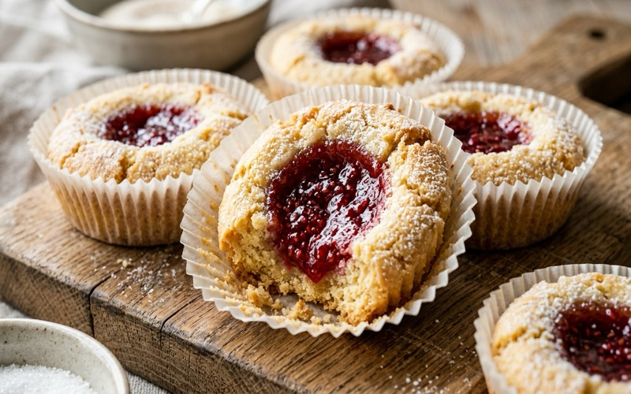
Fika & BakningMöra, spröda mördegskakor fyllda med söt hallonsylt & vanilj
En av Sveriges mest älskade småkakor till kafferepet! Möra och spröda mördegskakor bakade på äkta smör och vaniljsocker med en djup grop fylld av bubblande söt hallonsylt.
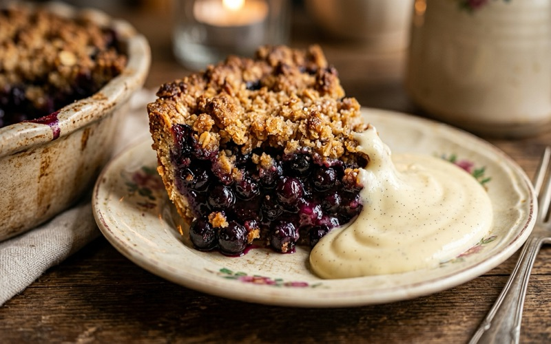
Fika & BakningSötsyrliga vilda blåbär under ett knaprigt havresmultäcke med äkta vaniljsås
Sommarens och höstens godaste bärpaj! Saftiga vilda blåbär pudrade med potatismjöl och socker under ett gyllenbakat, knäckigt smultäcke på havregryn och smör, serverad med len vaniljsås eller vaniljglass.
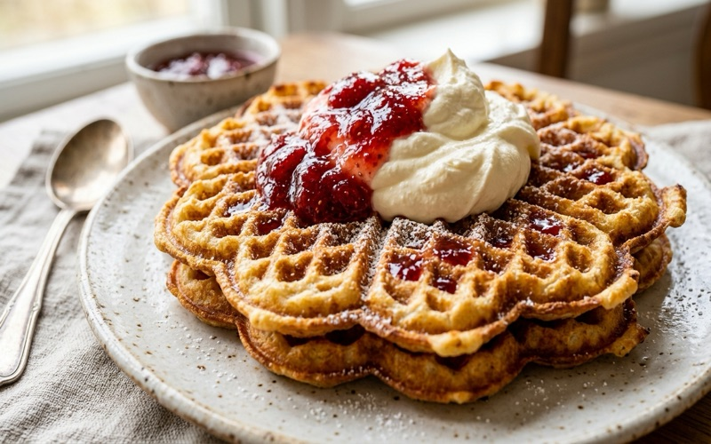
Fika & BakningExtremt frasiga hjärtvåfflor med kolsyrat vatten, smör & jordgubbssylt
Sveriges godaste och frasigaste våfflor! Hemligheten bakom den oslagbara krispigheten är en kombination av smält smör, iskallt kolsyrat vatten och bakpulver, serverade gyllenbruna med vispgrädde och bärsylt.
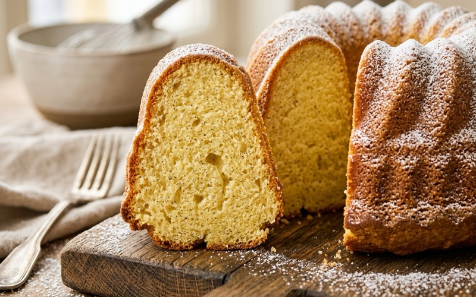
Fika & BakningHög och saftig sockerkaka med brynt smör, vanilj & frisk citron
Sveriges mest bakade grundkaka som aldrig slår fel! En hög, gyllene sockerkaka med mjuk saftig textur, subtil ton av brynt smör, vanilj och frisk citronzest.
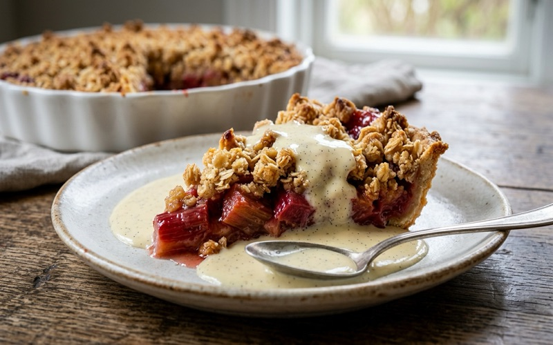
Fika & BakningKnäckigt havretäcke & sötsyrlig rabarber
Sveriges godaste rabarberpaj med knäckigt havresmultäcke, smör och kardemumma. Serveras ljummen med äkta vaniljsås.
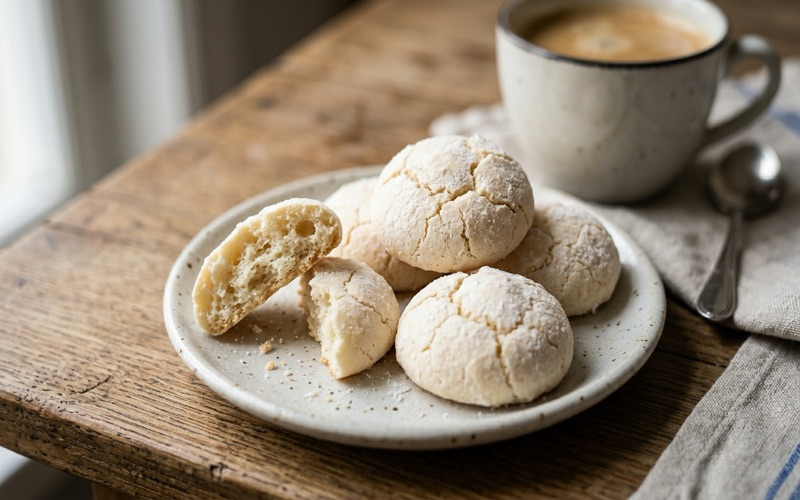
Fika & BakningSpröda småkakor som smälter i munnen
Mormors traditionella vaniljdrömmar med hjorthornssalt och äkta smör. Porösa, spröda småkakor som smälter på tungan.
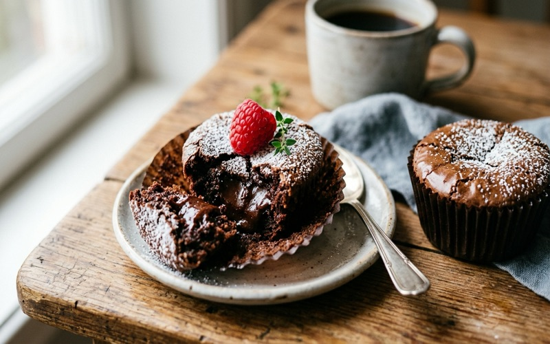
Fika & BakningSuperenkla chokladmuffins med rinnande mitt
Sveriges godaste kladdkakemuffins med tunn frasig yta och en seg, rinnig chokladkärna. Bakas enkelt på bara 20 minuter.
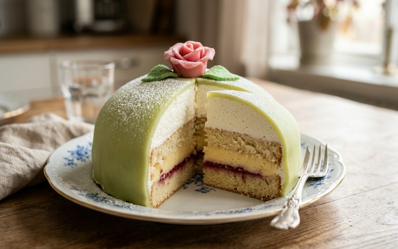
Fika & BakningFluffig botten, len vaniljkräm & grönt marsipanlock
Sveriges nationaltårta med fluffiga sockerkaksbottnar, hemgjord len vaniljkräm, syrlig hallonsylt, vispgrädde och klassiskt grönt marsipanlock.
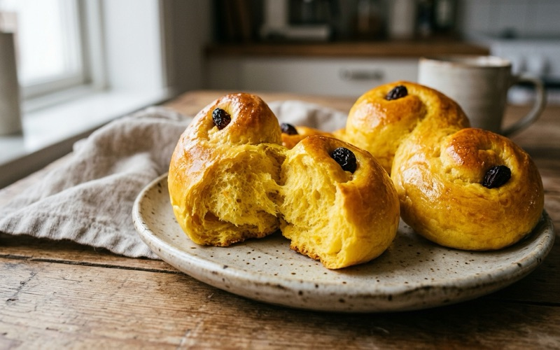
Fika & BakningSaftiga saffranskusar med kesella & russin
Sveriges godaste lussekatter och saffransbullar bakade med kesella, äkta smör och saffran. Extra saftiga som inte blir torra.
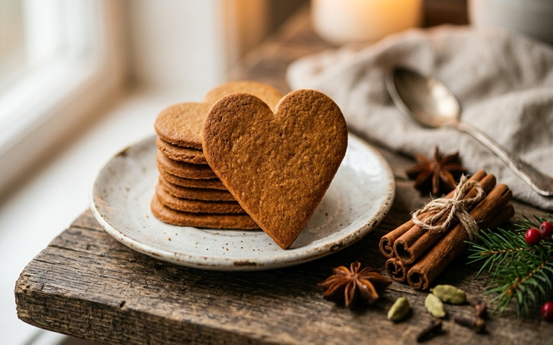
Fika & BakningTunnkavlade, spröda & doftande av julens kryddor
Mormors traditionella recept på tunna, spröda pepparkakor med kanel, ingefära, kryddnejlika och kardemumma. Lättkavlad deg.
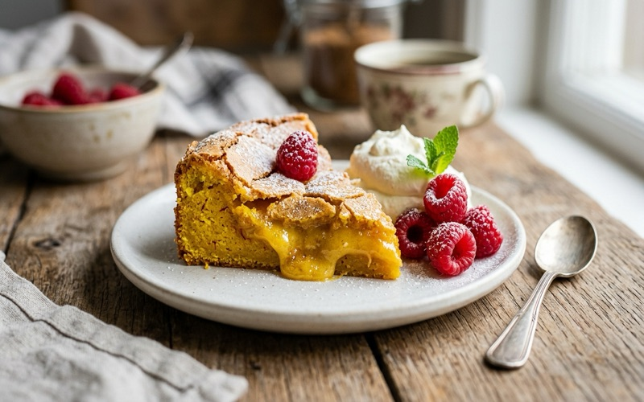
Fika & BakningKrämig vit choklad, saffran & rinnande mitt
Underbart kladdig och lyxig saffranskladdkaka med smält vit choklad, äkta saffran och vanilj. Bakas snabbt på 25 minuter.
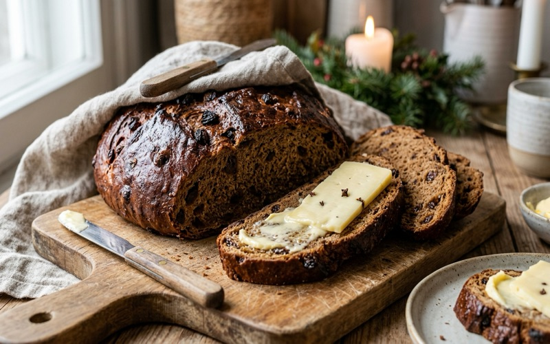
Fika & BakningMustig julvört, russin, pomerans & julkryddor
Traditionellt svenskt vörtbröd med julvört eller mörkt julöl, russin, pomerans, nejlika och ingefära. Oumbärligt till julskinkan.
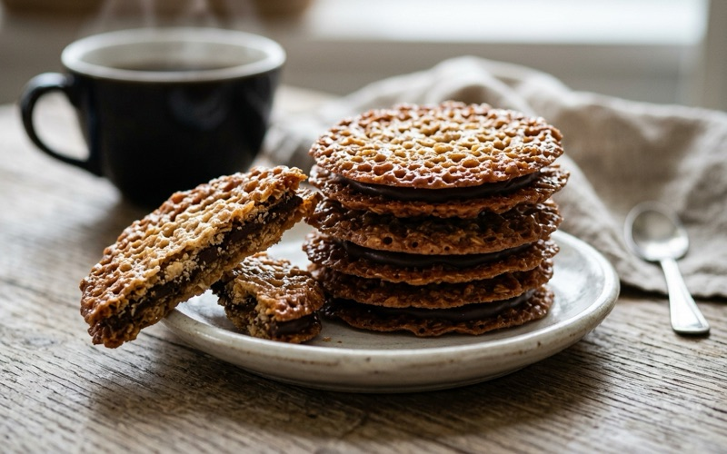
Fika & BakningSpröda karamelliserade flarn fyllda med choklad
Underbart spröda och knäckiga havreflarn med sirap och äkta smör, fyllda med fyllig mörk choklad. Klassiska svenska konditorikakor.
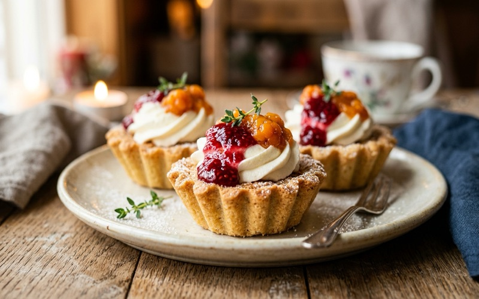
Fika & BakningSpröda mördegsformar med mandel & hjortronsylt
Mormors klassiska spröda mandelmusslor bakade i räfflade metallformar med skållad mandel, bittermandel och smör. Fylls med sylt och vispgrädde.
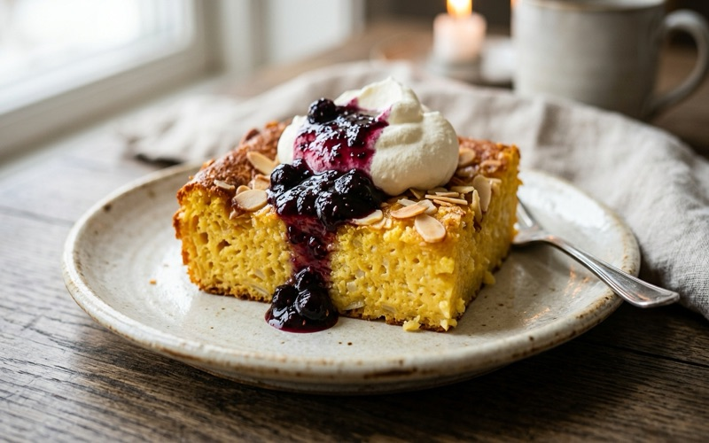
Fika & BakningUgnsbakad saffransgröt med hackad mandel & sylt
Äkta gotländsk saffranspannkaka på risgrynsgröt, saffran, ägg och hackad sötmandel. Serveras ljummen med salmbärssylt och vispad grädde.
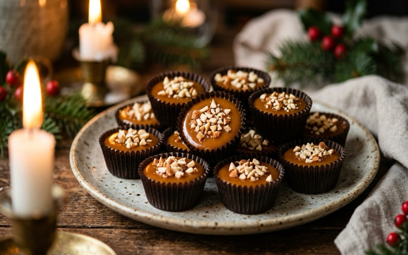
Fika & BakningGyllenbrun julkola med hackad mandel & perfekt konsistens
Klassiskt recept på hemgjord julknäck med ljus sirap, vispgrädde, socker och finhackad skållad mandel. Med kulprov och exakta temperaturer för perfekt seghet.
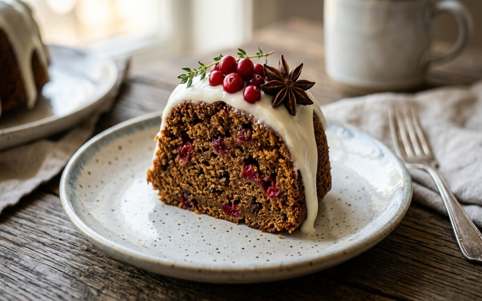
Fika & BakningKryddig sockerkaka med lingonsylt, kanel, ingefära & nejlika
Klassiskt recept på saftig mjuk pepparkaka med rårörda lingon, gräddfil och kryddor. Toppad med en silkeslen frosting på färskost och friska lingon.
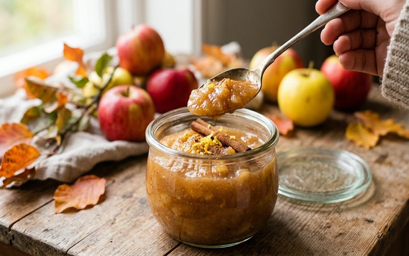
Fika & BakningLent och smakrikt äppelmos utan konserveringsmedel
Klassiskt recept på hemgjort äppelmos med friska svenska äpplen, kanelstång och färsk citron. Enkelt att koka i kastrull och perfekt till gröten eller pannkakorna.
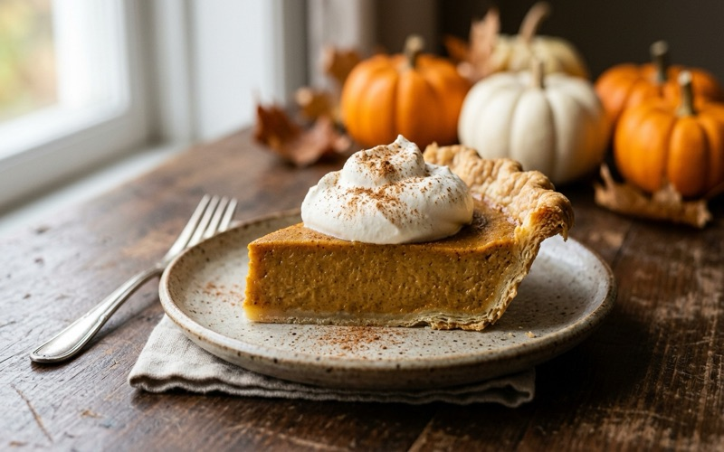
Fika & BakningFrasigt pajskal med kryddig pumpafyllning på kanel & ingefära
Klassiskt recept på krämig pumpapaj (Pumpkin Pie) med frasig mördegsbotten och fyllning på pumpapuré, kanel, ingefära, muskot och lönnsirap. Perfekt till Halloween och höstfika.
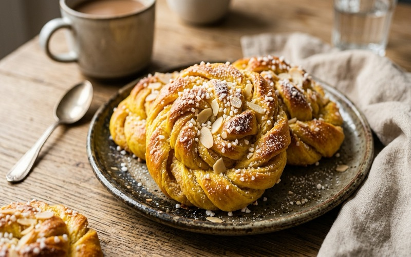
Fika & BakningFluffiga gyllengula saffransbullar med mandelfyllning & pärlsocker
Klassiskt recept på saftiga saffranssnurror med fyllning av mandelmassa, äkta smör och vanilj. Toppade med pärlsocker och hyvlad mandel – julens lyxigaste saffransbullar.
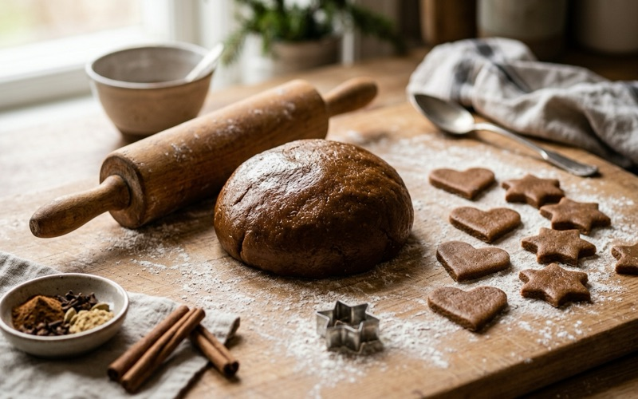
Fika & BakningSmidig pepparkaksdeg med sirap, smör & kryddor som får vila i kylen
Klassiskt recept på hemlagad pepparkaksdeg med äkta smör, ljus sirap och rikligt med kryddor. Lättkavlad deg som ger spröda och smakrika pepparkakor.
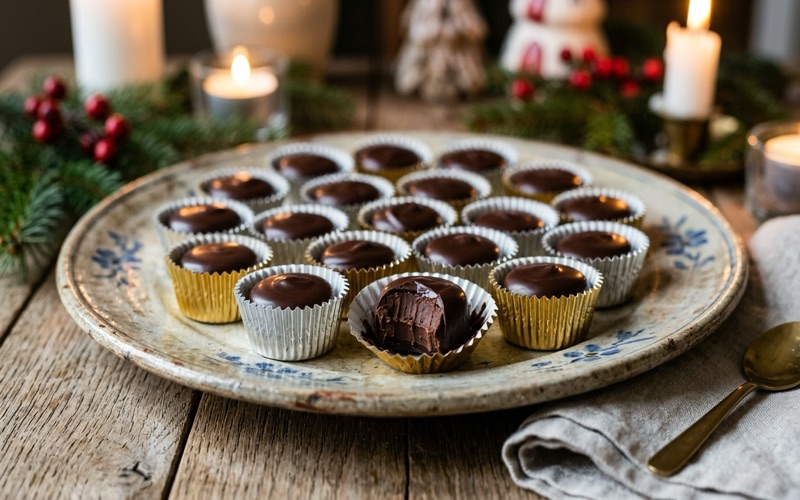
Fika & BakningTraditionellt julgodis på mörk choklad & kokosfett med apelsin & flingsalt
Klassiskt recept på hemgjord ischoklad på mörk choklad och kokosfett. Ett enkelt och älskat julgodis som smälter i munnen och kan smaksättas med apelsin eller flingsalt.
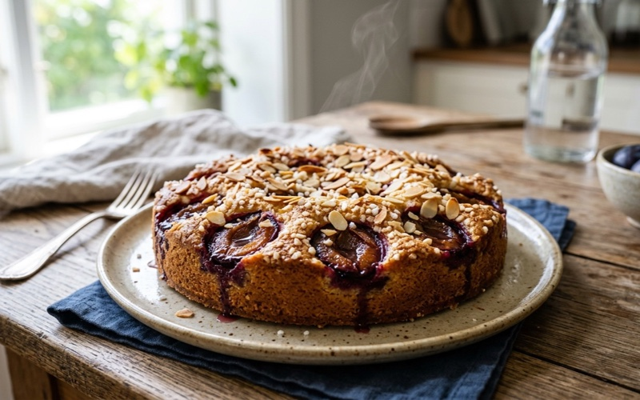
Fika & BakningLjuvlig höstkaka med färska svenska plommon, mandel & pärlsocker
Klassiskt recept på saftig plommonkaka med färska plommon, riven mandelmassa, brynt smör och nymald kardemumma. Höstens allra godaste skördefika.
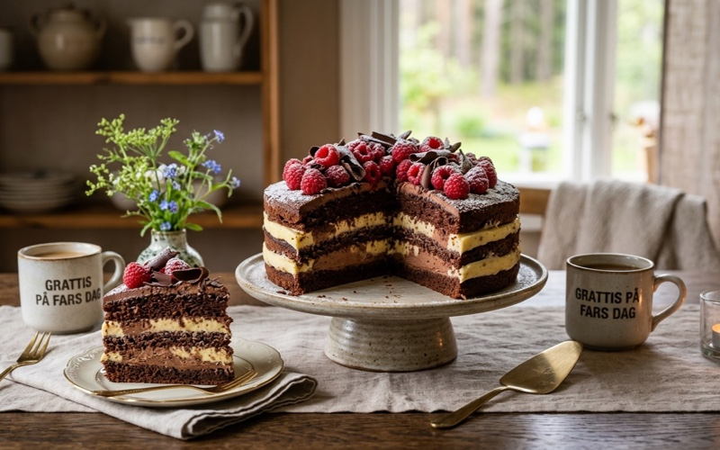
Fika & BakningFestlig chokladtårta med len vaniljkräm, fluffig chokladgrädde & färska hallon
Klassiskt och oemotståndligt recept på fars dag tårta! Hög, saftig chokladbotten fylld med len vaniljkräm, rårörda hallon och krämig chokladmousse.
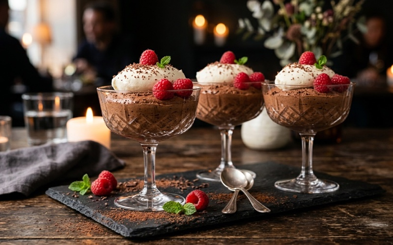
Fika & BakningLuftig, sammetslen chokladmousse med 70% mörk choklad, äggulor, kaffe och lättvispad grädde
Lyxigt och idiotsäkert recept på klassisk fluffig chokladmousse! Gjord på mörk kvalitetschoklad, ägg och vispad grädde för en silkeslen dessert som smälter i munnen.
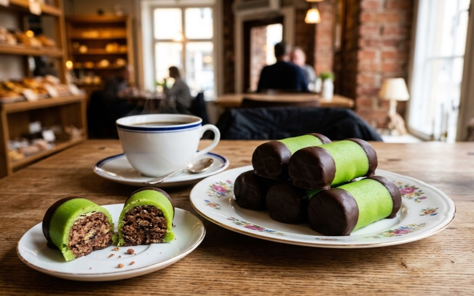
Fika & BakningSvenska konditoriklassikern med kaksmulor, smörkräm, arrak och grön marsipan doppad i mörk choklad
Bästa receptet på klassiska hemgjorda dammsugare (punschrullar)! Saftig fyllning smaksatt med arrak, inrullad i grön marsipan och doppade ändar i mörk choklad.
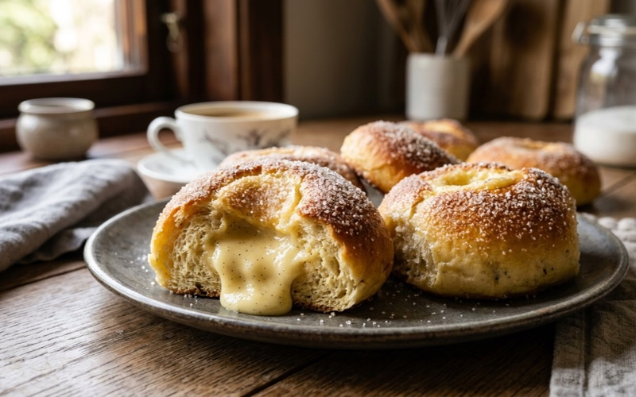
Fika & BakningMjuka, kardemummadoftande vetebullar fyllda med hemgjord vaniljkräm och rullade i socker
Bästa receptet på klassiska vaniljbullar (solbullar)! Otroligt saftig kardemummadeg fylld med len vaniljkräm med äkta vanilj, penslade med smör och doppade i strösocker.
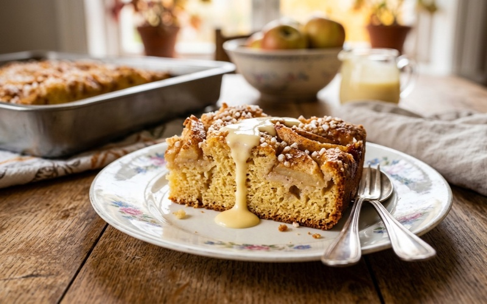
Fika & BakningMjuk, saftig sockerkaksbotten fylld med kaneldoftande äppelklyftor, kardemumma och knaprigt pärlsocker
Det perfekta receptet när du vill baka äppelkaka till många! Otroligt saftig sockerkaksbotten toppad med syrliga äppelskivor, kanel och pärlsocker i en klassisk ugns långpanna.